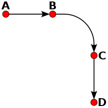
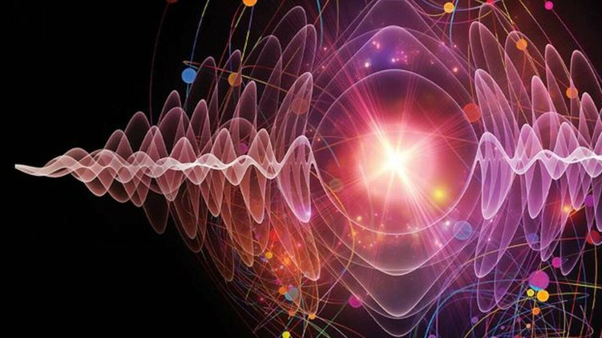

La mecánica clásica es la teoría física que describe el movimiento de los objetos a escalas macroscópicas. Fue desarrollada por científicos como Isaac Newton y se basa en principios deterministas, donde las leyes del movimiento son precisas y predecibles.
La mecánica cuántica es una teoría física que describe el comportamiento de las partículas subatómicas, como electrones y fotones. A diferencia de la mecánica clásica, la mecánica cuántica se rige por principios probabilísticos y introduce el concepto de superposición y entrelazamiento cuántico.
